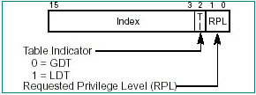
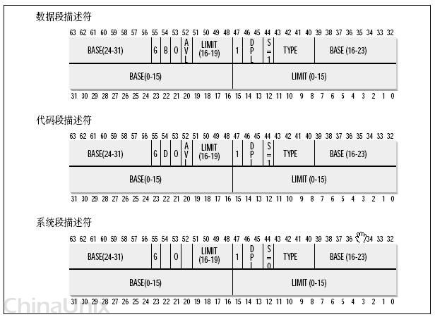
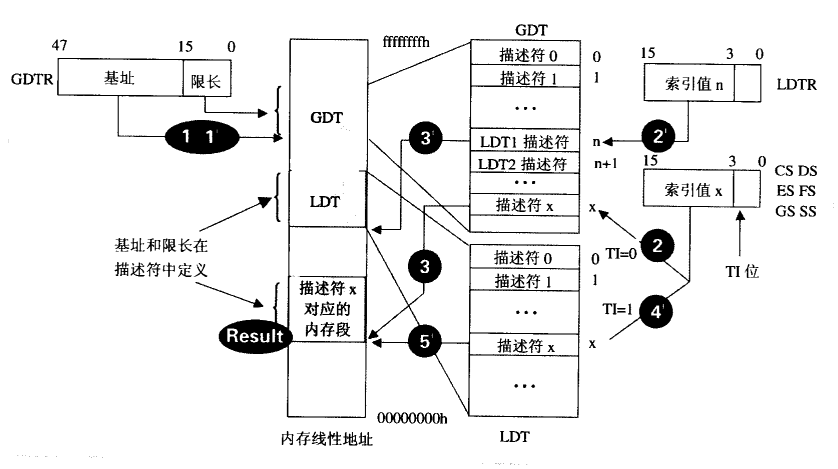
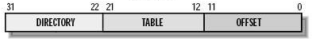
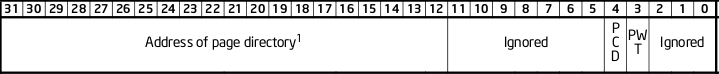
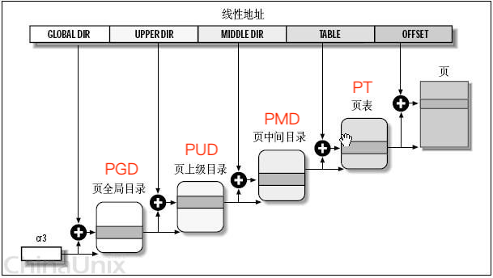

Assume: 32位操作系统，32位寻址总线宽度 → 4G线性空间
地址转化
地址转化的全过程可以用以下这张图来概括：

以下是具体步骤介绍。
1. 逻辑地址 → 线性地址 (段式内存管理，Intel早期策略的保留)
段内偏移地址(32位)
段选择符：16位长的序列，是索引值，定位段描述符；结构：
- 高13位为表内索引号 —— 但注意由于GDT第一项留空，所以索引要先加1；
- 而2位为TI表指示器，0是指GDT，1是指LDT；
- 0、1位是RPL请求者特权级，00最高，11最低 —— 在x86保护模式下修改寄存器是系统之灵，必须有对应的权限才能修改(当前执行权限和段寄存器中(被修改的)的RPL均不低于目标段的RPL)
段描述符：8x8=64位长的结构，用来描述一个段的各种属性。结构：
- 0、1字节+6字节低4位(20位) 段边界/段长度：最大1MB或者4G(看粒度位的单位)
- 2、3、4、7字节(32位) 段基址：4G线性地址的任意位置(不一定非要被16整除)
- 6、7字节的奇怪设计是为了兼容80286(24位地址总线)
- 剩下的那些是段属性，详见
20180819143434
段描述表：多任务操作系统中，含有多个任务，而每个人物都有多个段，其段描述符存于段描述表中。
IA-32处理器有3个段描述表：GDT、LDT和IDT。- GDT(Global Descripter Table) 全局段描述符表：一个系统一般只有一个GDT，含有每一个任务都可以访问的段；通常包含操作系统所使用的代码段、数据段和堆栈段，GDT同时包含各进程LDT数据段项，以及进程间通讯所需要的段。
GDTR是CPU提供的寄存器，存储GDT的位置和边界；在32位模式下RGDT有48位长(高32位基地址+低16位边界)，在32e模式下有80位长(高64位基地址+低16位边界)。
GDT的第一个表项留空不用，是空描述符，所以索引号要加1。
GDT最多128项。 - LDT(Local Descripter Table) 局部段描述符表：16位长，属于某个进程。一个进程一个LDT，对应有RLDT寄存器，进程切换时RLDT改变。
RLDT和RGDT不一样，RLDT是一个索引值而不是实际指向，指向GDT中某一个LDT描述项。所以如果要获取LDT中的某一项，先要访问GDT找到对应LDT，再找到LDT中的一项。
编译程序时，程序内赋予了虚拟页号。在程序运行时，通过对应LDT转译成物理地址。故虚拟页号是局部性的、不同进程的页号会有冲突。
LDT没有空选择子。 - IDT(Interrupt Descripter Table) 中断段描述符表；一个系统一般也只有一个。
- 以下这个图能做一点解释： 
- GDT(Global Descripter Table) 全局段描述符表：一个系统一般只有一个GDT，含有每一个任务都可以访问的段；通常包含操作系统所使用的代码段、数据段和堆栈段，GDT同时包含各进程LDT数据段项，以及进程间通讯所需要的段。
2. 线性地址 → 物理地址 (页式内存管理)
这一步由CPU的页式管理单元来负责转换。——MMU(内存管理单元)。
线性地址可以拆分为三部分(或者两部分)：
页(Page)：线性地址被划分为大小一致的若干内存区域，其对应映射到大小相同的与物理空间区域页框(Frame)上。这个映射不一定是连贯而有序的。
CR3：页目录基址寄存器。对于每一个进程，CR3的内容不同(有点像RLDT)，页目录基址也不同，线性地址-物理地址的映射也不同。
页目录：占用一个4kb的内存页，最多存储1024个页目录表项(PDE)，一个PDE有4字节。在没启用PAE时，有两种PDE，规格不同。
页目录表项(PDE)：每个程序有多个页表，即拥有多个PDE。PDE的结构如下：

12~31位(20位)表示页表起始物理地址的高20位(页表基址低12位为0，即一定以4kb对齐)。页表：一个页表占4kb的内存页，最多存储1024个页表项(PTE)，一个PTE是4字节。页表的基址是4kb对齐的，低12位是0。
采用对页表项的二级管理模式(也目录→页表→页)能够节约空间。因为不存在的页表就可以不分配空间，并且对于Windows来说只有一级页表才会存在主存中，二级可以存在辅存中——不过Linux中它们都常驻主存。
一些CPU会提供更多级的架构，如三级、四级。Linux中，有对应的高层次抽象，提供了一个四层页管理架构：

把中间的某几个定为长度为0，就可以调整架构级数。如“四化二”：某地址0x08147258，对应的PUD、PMD里只有一个表项为PUD→PMD，PMD→PT；划分的时候，PGD=0000100000，PUD=PMD=0，PT=0101000111.
3. TLB (转换检测缓冲区、快表、转译后被缓冲区)
处理器中，一个具有并行朝赵能力的特殊高速缓存器，存储最近访问过的一些页表项(时空局部性原理，减少页映射的内存访问次数)。
TLB较贵，通常能够存放16~512个页表项。
- TLB命中：直接取出对应的页表项
TLB缺失：先淘汰TLB中的某一项(TLB替换策略，一些算法，可以由硬件或软件来实现)
- 硬件处理TLB Miss：CPU会遍历页表，找到正确的PTE；如果没有找到，CPU就会发起一个页错误并将控制权交给操作系统。
- 软件处理TLB Miss：CPU直接发出未命中错误，让操作系统来处理。
脏记录：当TLB中某个PTE项失效(如切换进程、进程退出、虚拟页换出到磁盘)，PTE标记为不存在，此时映射已经不成立了。
操作系统要保证即时刷新掉这些脏记录，不同的CPU有不同的刷新TLB方法，但每次都完全刷新TLB会很慢，所以现在有一些策略，扩展对一个PTE的描述(如针对某个进程、空间的标识，如果目前进程与PTE相关，就会忽略掉)，这样可以让多个进程同时共存TLB